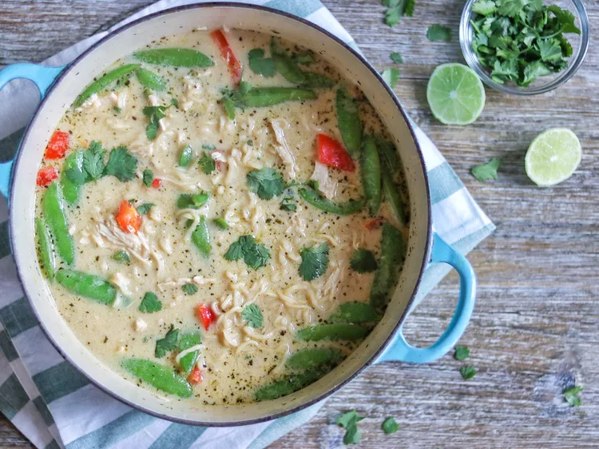

Creamy Green Curry Chicken Ramen

How to make Green Curry Soup
A creamy, delicious, Thai-inspired upgrade to ramen noodle packages. For more of a kick, you can double the jalapeno and add additional curry paste.
Ingredients
- 1 tablespoon vegetable oil
- 1 jalapeno pepper, seeded and minced
- 2 cloves garlic, minced
- 1 teaspoon grated fresh ginger
- 1 lime, zested
- 2 cups shredded deli rotisserie chicken
- 2 (13.5 ounce) cans coconut milk
- 3 cups chicken stock
- ¼ cup green curry paste
- 2 tablespoons soy sauce
- 1 tablespoon fish sauce
- 1 tablespoon brown sugar
- 2 (3 ounce) packages ramen noodles (without flavor packet)
- 8 (6 ounce) packages snow peas
- 1 red bell pepper, chopped
- ¼ cup chopped fresh cilantr